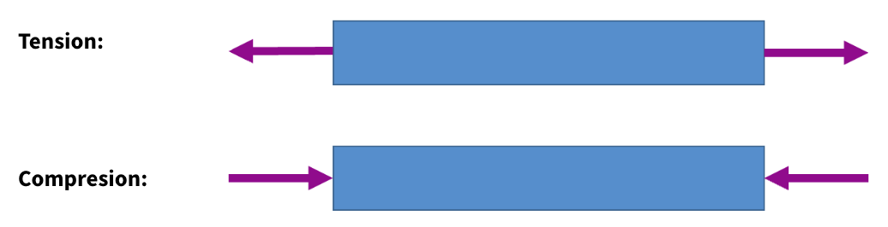

Lecture 8: Intermolecular Forces and Deformation#
Learning Objectives#
By the end of this lecture you should:
Be able to understand and reproduce the force-seperation and energy-seperation curves for molecules.
Give a qualitative explaination for the dissociation energy of a solid.
Give a qualitative explaination for thermal expansion.
Intermolecular Forces#
The plot here explains how matter remains, well matter.

First of all let us consider gas. Gas molecules have large spatial separations between them which means that generally they only interact with one another when they are close enough to collide. The majority of the time these molecules move independently of one another.
For liquids and solids on the other hand, the molecules are bound to one another via intermolecular forces. These are not to be confused with intramolecular forces (those that bind the atoms together in atoms), which are much stronger. These intermolecular forces are simply caused by the interactions between the electrically charged constituents of the molecules.
These intermolecular forces only act between molecules when they are in close proximity to one another. Therefore we can conclude that forces between molecules are attractive at short distances. We define the attractive force acting between molecules to be negative.
When we consider a material, we must also recall that the majority of matter is empty space, from which we can conclude that there must be some force that prevents atoms/molecules from getting too close to one another. Therefore at very short ranges, the force acting between molecules must be repulsive. We define the repulsive force acting between molecules to be positive.
The red line on the plot above represents the sum of the attractive and repulsive forces. As the molecules are brought closer together, they become more strongly attracted to one another (the force becomes increasingly negative), however as the separation reduces even further, the force begins to become less negative and the positive attraction between the molecules begins to decrease, until the intermolecular force (the net force) acting on the molecules becomes zero. The separation between the molecules when the intermolecular force becomes zero is known as the equilibrium separation. This spacing is approximately the distance between molecules in liquids and solids.
When the separation between the molecules becomes less than the equilibrium distance, the force acting on the molecules becomes (positive) and repulsive. The gradient of this repulsive force as a function of distance is much steeper than the attractive force, therefore only a small compression beyond the equilibrium distance corresponds to a large increase in the repulsive force acting between the molecules.
As these forces are a function of distance we can safely assume that we are actually witnessing the effect of two independent forces and the intermolecular force is simply the net force acting on the molecules. Clearly at small distances, the repulsive force dominates.
As the molecules are brought closer together, we will have an increase in the density of like charges such as electrons which will therefore repel one another. We can also consider the Pauli exclusion principle which states that two fermions (such as electrons) cannot occupy the same quantum. When two are brought together they experience a repulsive force known as Pauli-repulsion. You will meet the exclusion principle in more depth in your particle and quantum courses if you go on to study Physics.
Intermolecular Potential#
We can expand upon this explanation further by considering the potential energy of the molecules as a function of separation distances. This is what is plotted in blue in this graph.
We see that the potential energy has a minimum at the equilibrium distance. This is what we call a potential well. We can see here that the net force acting on the molecule is zero in this potential well so there is clearly a relationship between the force and the potential energy. The force at any given intermolecular separation is simply equal to the gradient of the potential energy function:
\(F = - \frac{dU}{dr}.\)
There turning point of the potential energy curve has a gradient of zero and this is equal to the magnetude of the force acting on the molecule at that seperation distance.
At low temperatures molecules will have some kinetic energy, but the average kinetic energy of a molecule will be less than the depth of the potential well, so the molecule remains bound as either a liquid or a solid with average intermolecular spacings of \(r_0\).
If the molecules are supplied with heat and their temperatures increase, their average kinetic energies will exceed the depth of the potential well and the molecule can escape the intermolecular force and move independently in the gaseous phase.
The diagram shows that the average bond length and strength can be determined from the properties of the potential well.
Thermal Expansion#
We can use the intermolecular potential plot to explain why materials expand when they are heated.

Looking at this plot you will notice that the shape of the potential well is asymmetric around \(r_0\) as the repulsive force is stronger than the attractive force at short distances.
Solids contain atoms/molecules that vibrate around fixed lattice points. If we provide them with energy (e.g. increase their temperature) the amplitude of their vibrations will increase, which is what we see by looking at the width of the potential well as the potential well becomes less symmetric. Due to the shape of the well becoming less symmetric, the molecule is able to oscillate on average at larger molecular separation than a smaller one. This is the basis for thermal expansion.
In a liquid, the intermolecular separations are only slightly larger than that for the solid phase of the same substance, but unlike a solid, the molecules have much greater freedom of movement and the regular structure of molecules only occurs on much smaller scales involving a few molecules.
Gas molecules are widely separated and so only have very small attractive forces. As we have discussed previously, when modelling with ideal gases, we assume there are no attractive forces between molecules.
Referring back to solids, we should consider what happens to the negative space in a solid as it expands, for example, the central hole in a ring. We know that linear expansion occurs in all directions, so one may thing that this would result in the inner side of the ring expanding outwards and the hole becoming smaller, but this is not actually the case. Take a look at the diagram below:
The image on the left shows the solid with a central cutout. The middle image is meant to represent the atomic lattice structure of the solid. On this atomic scale, we know that as we supply additional heat and the temperature of the material increases, the average separation of the atoms in their lattice will increase. This is what is shown by the right most panel.The diagram shows how if we increase the space between the atoms, the size of the hole in the middle also increases!
Dissociation Energy#
The dissociation energy of a single molecule, \(\epsilon\) is the amount of energy required to break the intermolecular bonds between molecules in a substance and seperate it down into its constituent molecules. This can be calculated from the latent heat of sublimiation of the substance, \(L_{SM}\), using the equation:
\( L_{SM} = \frac{1}{2}n N_a \epsilon,\)
where \(n\) is the number of moles, \(N_a\) is Avagadro’s number. The factor of a half is present to ensure that the bond between pairs of atoms is not double counted. Looking at the intermolecular potential plot, the dissociation energy is simply equal to the depth of the well. By considering how much thermal energy a material poses with respect to the dissociation energy, we are able to categorise it into three different types of matter: cold matter, moderate temperature or high temperature. The features of each of these categories is tabulated below:
Thermal Energy |
Degrees of Freedom |
Molecular Seperation |
Structure |
|
|---|---|---|---|---|
Cold Matter |
\(<0.1\epsilon\) |
Vibrational |
\(r_0\) (likely a solid) |
Often regular arrangement (crystaline structure) |
Moderate Temperature |
\(0.1\epsilon - 1\epsilon\) |
Vibrational, Rotational, Translational |
\(\approx r_0\) (likely a liquid) |
No regular structure but still condensed |
High Temperature |
\(>\epsilon\) |
Translational Motion Dominant |
\( >10 r_0\) (gaseous - molecular separation is pressure dependant) |
None (Intermolecular forces negligible bar collisions) |
Degrees of Freedom
If you are unfamiliar with this term, it simply means the way that something is able to move. Vibrational simply means oscillating back and forth around a fixed point, translational means being able to move in the \(x\), \(y\) and \(z\) directions and rotational means… well rotating.
For each degree of freedom listed above, there are different modes. For example a triatomic gas may be able to vibrate either by stretching symetrically, stretching assymetrically, scissoring, rocking, wagging or twisting as shown below:

This illustration was taken from Wikipedia
Deformation#
Now that we have looked at the forces that act on materials at a molecular level we are going to look at the impact exerting forces has on a macroscopic scale by considering the deformation of solids.
Deformation is by definition just the change in shape or dimensions of something caused by the application of external forces.

The figure above shows examples of tension and compression of a solid, wherein two forces acting in opposite directions in equilibrium are used to change the shape of the material. A single force or unequal forces would just result in the translational movement of the material (e.g. it being pulled or pushed).
Make note of the language being used here, we will refer to compressive and tensile forces and it is important that you remember what these are. Compression is simple enough to remember, but ensure that you are happy that tension is applying a pulling force to something.
There are several types of deformation to be aware of: tensile and compressive deformation, bending, torsion and shear. The figure below illustrates the latter three types of deformation:
Bending is simply bending an object We apply a force perpendicularly to its longitudinal axis whilst its ends are secured, which results in the middle of the bar moving whilst the ends remain fixed in place… bending the object.
Torsion deformation is simply applying a torque (or rotational force) to an object, again whilst holding secure its other end, this results in the material becoming twisted.
Finally we have shear deformation, which is simply where we apply forces in different directions at different parts of the object, which forces the two parts to move in opposite directions.
Engineers must account for deformative forces and are able to design components that are resistant to different types of deformation. Consider bending, when a material is bent, the side that is being pushed experiences compression, whereas the bottom of the beam is under tension. The centre line of the bar remains will remain neither stretched or compressed. This is shown in the figure below taken from engineeringskills.com:
To minimise the amount of compression or extension, the surface area of the top and bottom of the bar are given a larger cross-sectional area, which means that the force is acting over a larger area. As we will see in a few slides, the area over which a force is applied is related to the compressive or tensile stress. The centre line can remain thinner to minimise the amount of material (cost) used to make the bars and reduce their weight, as as we mentioned before the centre line experiences no compression or tension. A classic example of this idea are “I” or “H” beams. Both are designed to have “flanges” and a “central web”. In a H beam the flanges are longer and the central web is thicker than that of an I beam. Both resemble the letter that they are named after. The figure below shows an H-beam, and was taken from Baker Steal Trading Ltd’s website which outlines the differences between I and H-beams.

Dynamic Deformation#
The example given on the previous slides are all types of static deformation e.g. deformation under a static load.
We also need to think about dynamic loading, which is where the amount of force acting upon and the amount of deformation of a material changes as a function of time. This can lead to fatigue.
“Fatigue is defined as a process of progressive localized plastic deformation occurring in a material subjected to cyclic stresses and strains at high stress concentration locations that may culminate in cracks or complete fracture after a sufficient number of fluctuations.” - Metal Fatigue Analysis Handbook, 2012.
This may occur cyclically, for example if you have a component that serves the same function and undergoes repeated application and application of force time and time again. It is understandable that the performance of the material will change over the lifetime of the product until it is no longer capable of serving its intended purpose, meaning it requires replacement.
For example, consider the components that make up an aircraft - as the plane is routinely flown it will experience a great number of forces acting upon it which change at different stages of the flight. Each flight the components of the aircraft will experience these forces over and over again.
When designing the plane, engineers need to take into account material fatigue, which is the weakening of a material caused by cyclical stresses and strains on the material (e.g. applying forces over and over again). This over time will cause small cracks to develop in the material, which will themselves grow and become a weak point in a component. Eventually this can lead to large cracks or even fracture of the component (component failure).

In the diagram above we see the fracture of an aluminium crank arm. Dark areas of striations show slow crack growth whereas the bright granular area shows where sudden fracture occurred. To better understand these phenomena, engineers can perform fatigue testing wherein they get a component and repeatedly apply cyclical loading onto it. They can then study where crack growth begins and how rapidly it propagates to determine component weak points and determine the approximate lifetime of the component (number of expected cycles).
Tensile Deformation, Stress and Strain#
Tensile deformation is a type of dynamic deformation. When we apply a load (force) to an object, for example a metal wire, the length of the object will increase by an amount \(\Delta L\). This is tensile deformation.
One thing to consider is that our material has a fixed volume/density. In this case, the volume of the wire is simply equal to its area multiplied by its length:
\(V = L A,\)
and in the case of cylindrical wire:
\( V = L \cdot \pi r^2.\)
Obviously \(\pi\) is a constant, which tells us that if the volume of the material is to remain the same, the cross sectional area of the wire must decrease. In this case, this means that the radius of the wire will decrease:

That being said, if the length of the wire is significantly longer than the radius, the change in length will result in a very small change in radius, small enough for us to neglect. For all of the problems you are going to encounter on this course, unless otherwise stated, you can assume that the radius of the wire will remain constant! This is important when performing stress and strain calculations.
What is stress?
Simply put, stress is defined as the force acting perpendicularly to an object per unit cross sectional area. This can be expressed mathematically as:
\(\sigma = \frac{F}{A}.\)
If the force is directed so as to increase the length of the object, it is tensile stress, and if it is squashing the object it is compressive stress. As the tensile stress is force per unit area, it has units of N\(\,\)m\(^{-2}\), which we know is also the unit for pressure, so we use the units of Pascal Pa.
What is strain?
Strain is the ratio of the change in length to the initial length, which can be expressed mathematically as:
\(\epsilon = \frac{\Delta L}{L_0} = \frac{L_f - L_0}{L_0}.\)
As this is a ratio between two lengths, it has no units. From our definition of strain we can see that if the final length is smaller than the initial length, the strain is negative. This corresponds to compressive stress.
Stress leads to strain!
Questions#
Warning
Atempt the questions before looking at the solutions otherwise you will not learn!
Students who look at mark schemes without going through the motions of a question often think “yes, that’s what I would have done”, but are then unable to perfom on exams as the knowledge was never consolidated through practise.
Note
Units have been omitted in calculations below for simplicity. Ensure you know what each value represents.
Question 1#
A cylindrical wire of length \(1.350\,\)m hangs vertically from the ceiling. A chandelier weighing \(35.00\,\)kg is attached to the end of the wire. The tensile stress acting on the wire is \(4372\,\)kPa.
a) Determine the radius of the wire.
When the chandelier is attached to the wire it is stretched to a new length of \(1.37\,\)m.
b)Determine the tensile strain on the wire.
Q1a Solution
We can use the stress equation to determine the area of the wire, and hence its radius:
\( \sigma = \frac{F}{A}, \)
\( A = \frac{F}{\sigma}, \)
\( \pi r^2 = \frac{F}{\sigma}, \)
\( r^2 = \frac{F}{\sigma \pi}, \)
\( r = \sqrt{\frac{F}{\sigma \pi}}, \)
Using \(F = ma\)
\( r = \sqrt{\frac{ma}{\sigma \pi}}, \)
subbing in the values provided in the question:
\( r = \sqrt{\frac{35 \times 9.81}{4372 \times 10^3 \times \pi}}, \)
\( r = 0.0050\, m, \)
\( r = 5\, mm. \)
Q1b Solution
To determine the strain on the wire we can simply use the strain equation:
\(\epsilon = \frac{L_f - L_0}{L_0},\)
\(\epsilon = \frac{1.37 - 1.35}{1.35},\)
\(\epsilon = 0.01481. \)